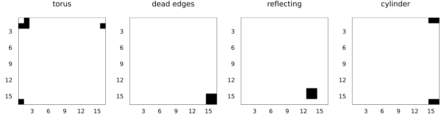
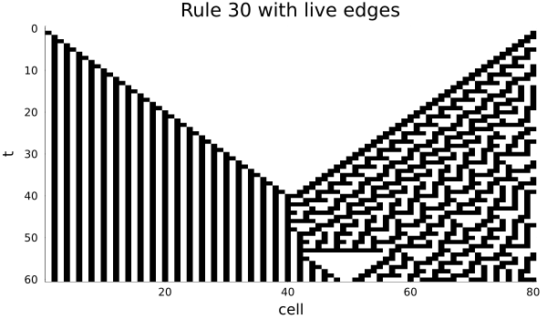
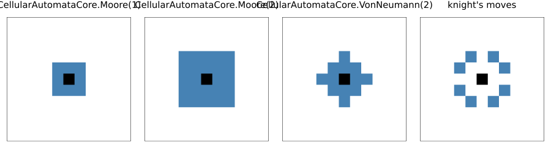
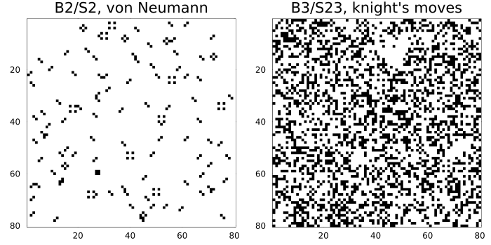
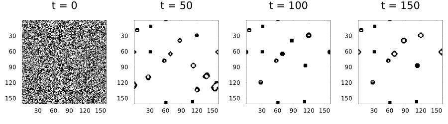
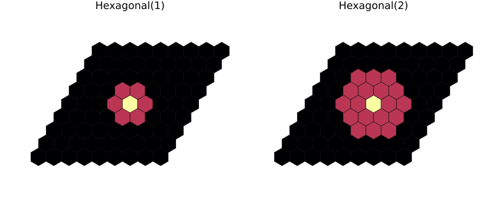
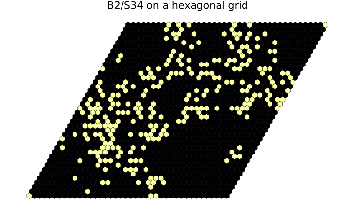
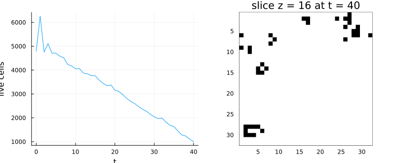
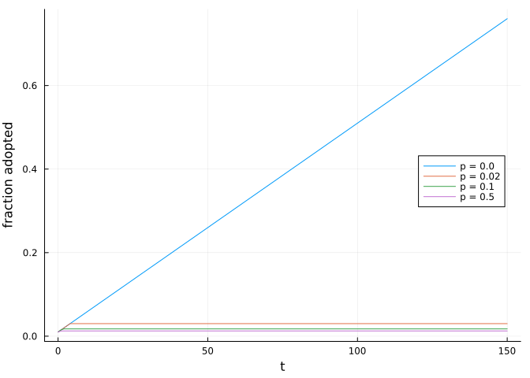

Spaces and neighbourhoods
Simon Frost
Overview
A rule says how a cell changes given its neighbours; the space says where the cells are and what lies beyond an edge, and the neighbourhood says which cells count as neighbours. Both are independent of the rule, so the same rule can run on a torus, a bounded grid, a hexagonal grid, a three-dimensional lattice or an arbitrary graph.
| space | constructor | cells |
|---|---|---|
| periodic square lattice, any dimension | Torus(dims...) | CartesianIndex |
| square lattice with edges | Grid(dims...; boundary) | CartesianIndex |
| hexagonal lattice | HexGrid(nq, nr; boundary) | CartesianIndex (axial) |
| irregular network | GraphSpace(n, edges) | Int |
ENV["GKSwstype"] = "100"
using CellularAutomataCore
using Plots
using RandomEdges
Each axis of a lattice has a boundary condition:
Periodic(): the axis wraps around.Constant(v): every cell beyond the edge holdsv.Reflecting(): the axis is mirrored at the edge, with the edge cell repeated.
Torus(dims...) is periodic on every axis; Grid(dims...; boundary) takes one boundary for all axes or a tuple with one per axis. Here a glider heading down and to the right meets the edge of a 16 × 16 board under four boundary conditions:
glider, _ = parse_rle(raw"""
x = 3, y = 3
bo$2bo$3o!
""")
u0 = place!(zeros(Int8, 16, 16), glider, (6, 6))
spaces = ["torus" => Torus(16, 16),
"dead edges" => Grid(16, 16; boundary=Constant(0)),
"reflecting" => Grid(16, 16; boundary=Reflecting()),
"cylinder" => Grid(16, 16; boundary=(Periodic(), Constant(0)))]
panels = map(spaces) do (name, space)
plot(solve(CAProblem(Life(), u0, 40; space)); c=:binary, colorbar=false,
title=name, titlefontsize=10)
end
plot(panels...; layout=(1, 4), size=(900, 250))
On the torus the glider leaves at the bottom right and re-enters at the top left, unharmed. Against dead edges it collides with the corner and settles into a block. The reflecting edge also turns it into a block, a little away from the corner, because the mirrored cells beyond the edge interact with it. The cylinder wraps vertically but not horizontally, so the glider meets the right-hand edge and becomes a block straddling the top and bottom rows.
A Constant edge need not be empty. Rule 30 on a line whose margins are live:
space = Grid(80; boundary=Constant(1))
plot(solve(CAProblem(Wolfram(30), zeros(Int8, 80), 60; space));
c=:binary, colorbar=false, size=(600, 350), title="Rule 30 with live edges")
Neighbourhoods
Every built-in neighbourhood is turned into explicit offsets from the centre cell. The centre itself is never a neighbour; a rule receives it separately. Offsets are listed with the first axis varying fastest:
neighbourhood_offsets(VonNeumann(1), Torus(5, 5))Offsets((0, -1), (-1, 0), (1, 0), (0, 1))The neighbour states a rule receives are in exactly this order. To see the shapes, mark the offsets on a small board:
function show_neighbourhood(nb, space=Torus(11, 11); title=string(nb))
m = zeros(Int, size(space))
c = CartesianIndex(6, 6)
for o in neighbourhood_offsets(nb, space).offsets
m[c + o] = 1
end
m[c] = 2
return plot(space, m; c=[:white, :steelblue, :black], colorbar=false, title,
titlefontsize=10, ticks=false)
end
knight = Offsets((1, 2), (2, 1), (2, -1), (1, -2), (-1, -2), (-2, -1), (-2, 1), (-1, 2))
plot(show_neighbourhood(Moore(1)), show_neighbourhood(Moore(2)),
show_neighbourhood(VonNeumann(2)), show_neighbourhood(knight; title="knight's moves");
layout=(1, 4), size=(900, 250))
Life and Generations use the space’s default neighbourhood unless given one. The same soup under two Life-like rules with unusual neighbourhoods:
soup = Int8.(rand(Xoshiro(1), 0:1, 80, 80))
plot(plot(solve(CAProblem(Life("B2/S2"; neighbourhood=VonNeumann(1)), soup, 60));
c=:binary, colorbar=false, title="B2/S2, von Neumann"),
plot(solve(CAProblem(Life("B3/S23"; neighbourhood=knight), soup, 60));
c=:binary, colorbar=false, title="B3/S23, knight's moves");
layout=(1, 2), size=(700, 350))
Larger than Life
Radius-$r$ Moore neighbourhoods give the “Larger than Life” rules, whose neighbour counts go well beyond 8. Counts are then given as ranges. Bosco’s rule is usually written R5,C0,M1,S33..57,B34..45, where M1 means the centre is included in the count. Counting neighbours only, as Life does, a live cell survives with 32 to 56 live neighbours and a dead one is born with 34 to 45:
bosco = Life(34:45, 32:56; neighbourhood=Moore(5))Life(34:45, 32:56; neighbourhood=Moore(5))soup = Int8.(rand(Xoshiro(3), 0:1, 160, 160))
sol = solve(CAProblem(bosco, soup, 150); saveat=50)
plot([plot(sol; snapshot=i, c=:binary, colorbar=false) for i in 1:4]...; layout=(1, 4),
size=(900, 250))
Hexagonal grids
HexGrid(nq, nr) stores hexagonal cells in axial coordinates: cell (q, r) sits at index [q, r], and its six nearest neighbours are the cells at offsets (±1, 0), (0, ±1), (1, -1) and (-1, 1). The default neighbourhood is Hexagonal(1); Hexagonal(2) adds the second ring.
function show_hex_neighbourhood(r)
space = HexGrid(9, 9)
m = zeros(Int, 9, 9)
c = CartesianIndex(5, 5)
for o in neighbourhood_offsets(Hexagonal(r), space).offsets
m[c + o] = 1
end
m[c] = 2
return plot(space, m; c=[:white, :steelblue, :black], title="Hexagonal($r)",
titlefontsize=10)
end
plot(show_hex_neighbourhood(1), show_hex_neighbourhood(2); layout=(1, 2), size=(700, 300))
The grid is drawn as a parallelogram because axial coordinates shear it; it is periodic by default, so it tiles the plane. Life-like rules work unchanged, counting six neighbours:
soup = Int8.(rand(Xoshiro(4), 0:1, 40, 40) .* (rand(Xoshiro(5), 40, 40) .< 0.4))
sol = solve(CAProblem(Life("B2/S34"), soup, 30; space=HexGrid(40, 40)))
plot(sol; c=[:white, :darkgreen], size=(700, 450), title="B2/S34 on a hexagonal grid")
Three dimensions
Lattices can have any number of dimensions. Carter Bays’ three-dimensional Life rule “4555” is B5/S45 with the 26-cell Moore neighbourhood:
soup3d = Int8.(rand(Xoshiro(6), 0:1, 32, 32, 32) .* (rand(Xoshiro(7), 32, 32, 32) .< 0.3))
sol = solve(CAProblem(Life("B5/S45"), soup3d, 40))
alive = [count(==(1), u) for u in sol.u]
plot(plot(sol.t, alive; xlabel="t", ylabel="live cells", legend=false),
plot(Torus(32, 32), final_state(sol)[:, :, 16]; c=:binary, colorbar=false,
title="slice z = 16 at t = 40");
layout=(1, 2), size=(800, 330))
Graphs
A GraphSpace is an arbitrary network: cell i reads the cells listed as its neighbours, in order. It is built from a list of neighbour lists or from an edge list (undirected unless directed=true). Rules see the neighbour states as a vector, so the same code works for any degree.
As an example, a “complex contagion”: a node adopts a behaviour (state 1) once at least half of its neighbours have, and never abandons it. On a ring lattice where each node is linked to its four nearest neighbours, a few adjacent adopters can start a cascade around the ring. Rewiring a fraction p of the links at random (a Watts–Strogatz small world) shortens paths but breaks up the local clusters that such a contagion relies on.
function small_world(n, k, p, rng)
edges = Set{Tuple{Int,Int}}()
for i in 1:n, j in 1:(k ÷ 2)
a, b = i, mod1(i + j, n)
if rand(rng) < p
b = rand(rng, 1:n)
while b == a || (min(a, b), max(a, b)) in edges
b = rand(rng, 1:n)
end
end
push!(edges, (min(a, b), max(a, b)))
end
return GraphSpace(n, collect(edges))
end
contagion = LocalRule() do cell, nbrs, ctx
(cell == 1 || isempty(nbrs)) && return cell
return count(==(1), nbrs) >= ctx.p.θ * length(nbrs) ? one(cell) : cell
end
n = 400
seeds = zeros(Int8, n)
seeds[1:4] .= 1
plt = plot(; xlabel="t", ylabel="fraction adopted", legend=:right)
for p in (0.0, 0.02, 0.1, 0.5)
space = small_world(n, 4, p, Xoshiro(10))
sol = solve(CAProblem(contagion, seeds, 150, (θ=0.5,); space))
plot!(plt, sol.t, [sum(u) / n for u in sol.u]; label="p = $p")
end
plt
With no rewiring the cascade advances steadily around the ring, one node in each direction per step. With even 2% of the links rewired it stops within a few steps: a node whose link into the adopting cluster was moved elsewhere no longer sees half of its neighbours adopting, and the front stalls there. Shortcuts that would speed up a simple contagion block a complex one.